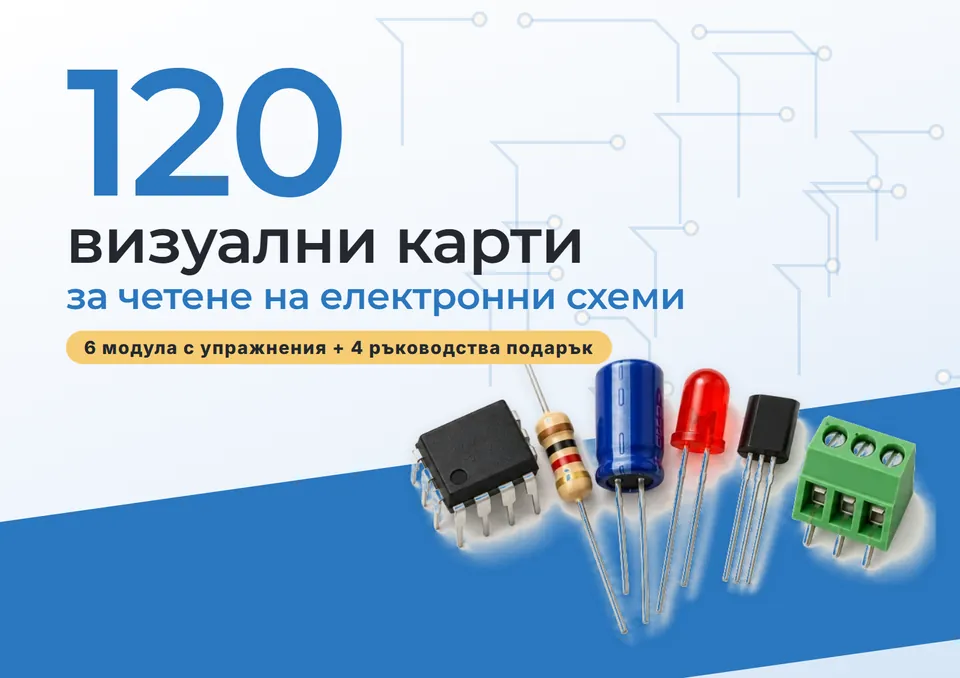
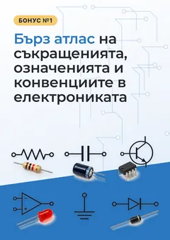
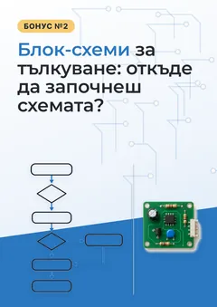
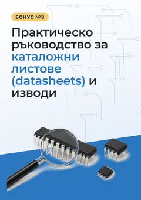
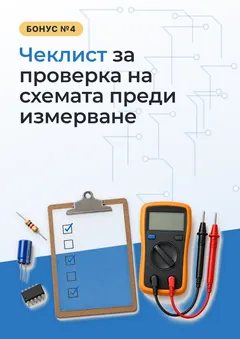

120 визуални карти за четене и тълкуване
120 карти в 6 прогресивни модула. На всяка карта — честа грешка, която е добре да избягваш; в края на всеки модул — упражнения с решенията им; в края на книгата — справочната библиотека.
⬇ Изтегли PDF Отвори в браузъра →Твоите 4 бонуса

Бърз атлас на съкращенията, означенията и конвенциите в електрониката
Не се обърквай пред непознати съкращения и означения. Провери бързо значението на основните означения и конвенции, използвани в електронните схеми.

Блок-схеми за тълкуване: откъде да започнеш схемата?
Отваряш схема и не знаеш откъде да започнеш? Следвай визуални блок-схеми, които показват какво да погледнеш първо, как да откриеш блоковете и откъде да проследиш връзките.

Практическо ръководство за каталожни листове (datasheets) и изводи
Научи се да разпознаваш изводите на компонентите и да намираш важната информация в каталожните листове (datasheets), с илюстрирани примери, които улесняват тълкуването.

Чеклист за проверка на схемата преди измерване
Избягвай проверките по метода на пробата и грешката. Имай практичен чеклист, с който да провериш връзките, означенията, изводите и важната информация, преди да започнеш измерванията.
Откъде да започнеш
- Изтегли петте PDF файла и ги запази на телефона или на компютъра си.
- Започни от карта 001 и следвай модулите по ред: всеки се опира на предишния.
- Когато завършиш даден модул, реши упражненията към него и сравни с решенията.
- Когато отвориш реална схема, дръж под ръка 4-те бонуса.
Твоята справочна библиотека
В края на основната книга има азбучен указател: намери термина и отиди направо на картата, където е обяснен.
Запази този линк
Тази страница е твоят достъп до материала по всяко време.
Включени актуализации
Когато излезе нова версия на картите или на бонусите, тя ще се появи точно тук, на същия линк, без допълнително заплащане.
Версия от 19.11.2026Следваща стъпка
Изтегли основната книга и отвори карта 001. След това вземи реална схема и я прочети по пътя в 5 стъпки от карта 020.